På uddannelsens femte tema fik vi til opgave at lave et redesign af et eksisterende website. Vi skulle arbejde som teams á 4 personer, og tage kontakt til den virksomhed, hvis site vi ville lave et redesign af. Foruden websitet, skulle vi også producere en kort video.
Teamet bestod af:
Victoria Vevest
Victoria Oxenbøll
Zehra Dursun
Yours Truly
Vi valgte at lave et redesign af Valbyparkens disc golf bane.
Du kan se vores virksomhedssite ved at klikke her.
A. Skitser
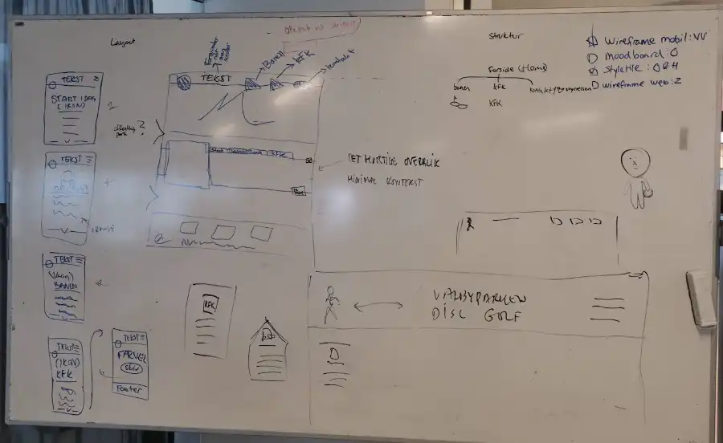
B. Wireframes
Mobil
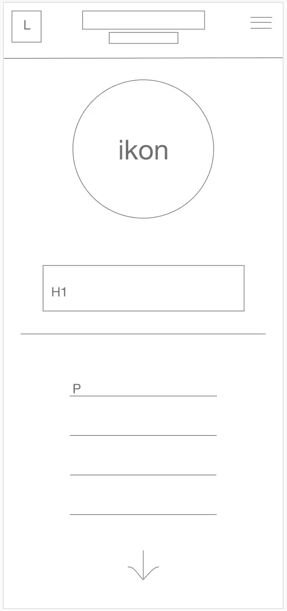
Web
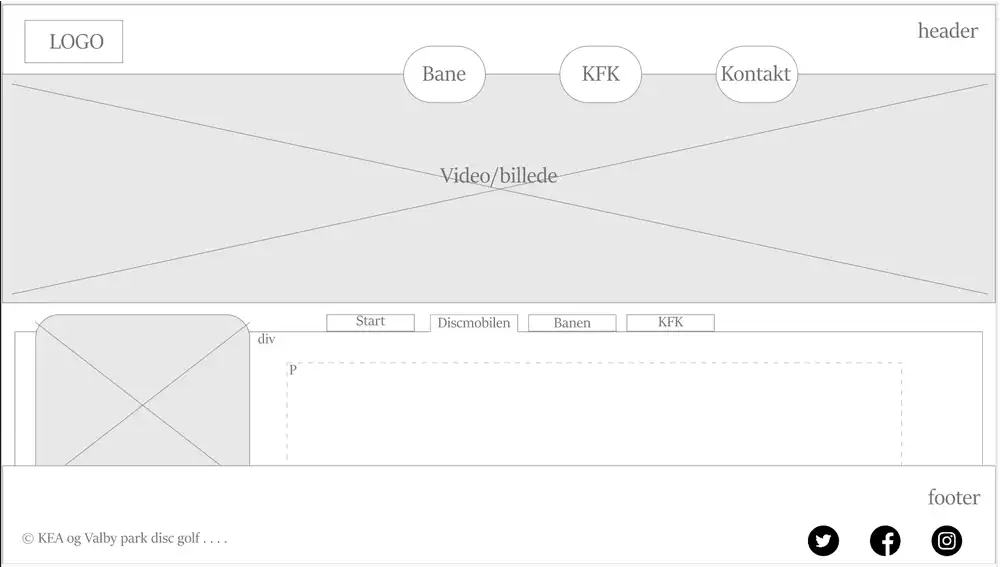
C. Styletile
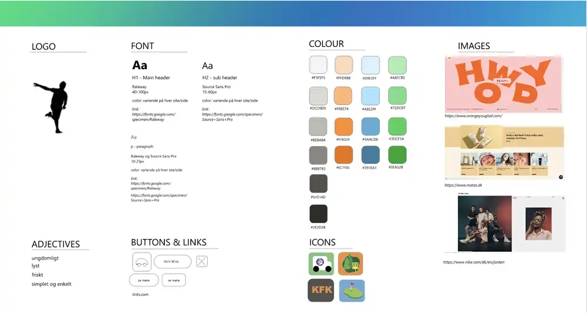
D. Moodboard
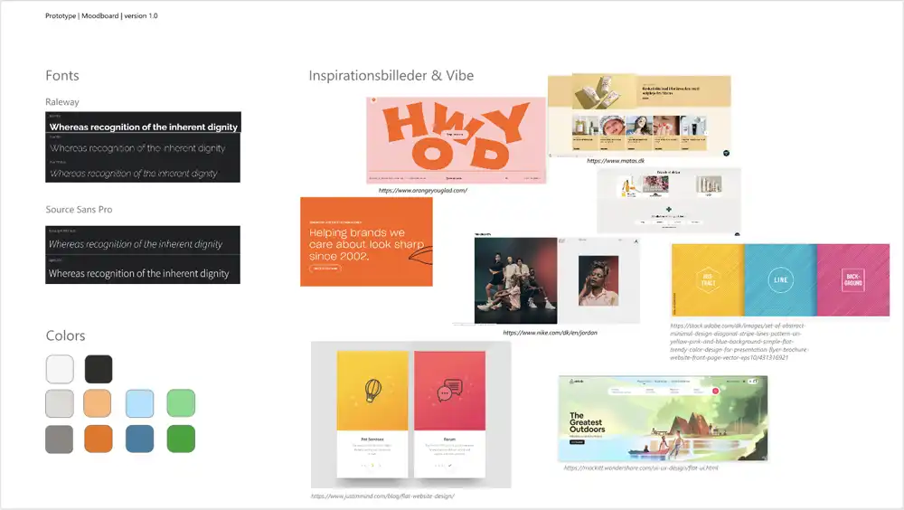
E. Endelig forside
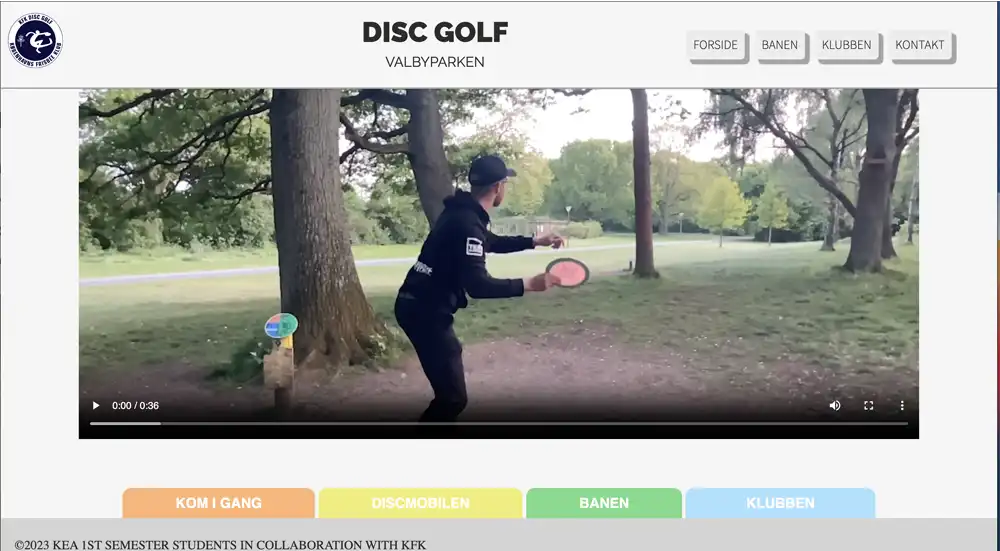
Koncept
Jeg valgte at lave et site om fem ikoniske skakpartier. Disse blev tildelt hver sin underside, der kunne styles i relation til partiet. På alle undersider er der en kort præsentation af den vindende spiller samt en begrundelse for valget af netop dette parti. Nedenunder er der mulighed for at gennemspille partiet på et til undersiden stylet skakbræt der er embedded fra sitet lichess.org. Her er det muligt at gennemspille partiet træk for træk, og se kommentarer til udvalgte træk og træksekvenser i en scrollboks, placeret umiddelbart under skakbrættet.
Layout
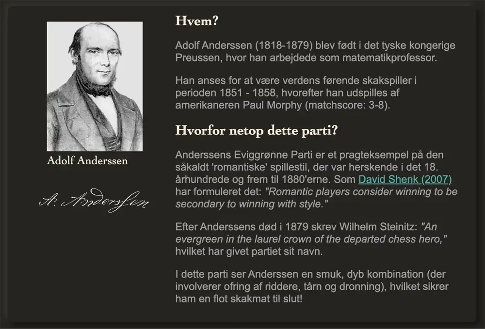
Undersiderne er opbygget på præcis samme måde: Navigation, overskrift, underoverskrift, præsentationsbillede, boks med “Hvem?” og “Hvorfor dette parti?”, unikt stylet skakspil (embedded fra lichess.org) med partiets træk, og en scrollboks med kommentarer til udvalgte træk og træksekvenser. Jeg forestiller mig at personen der aktivt vælger at klikke sig ind på et site af denne art, ønsker - og har mulighed for - at fordybe sig i partierne. Derfor har jeg haft en ide om minimalistisk “dark-mode” som overordnet rettesnor.
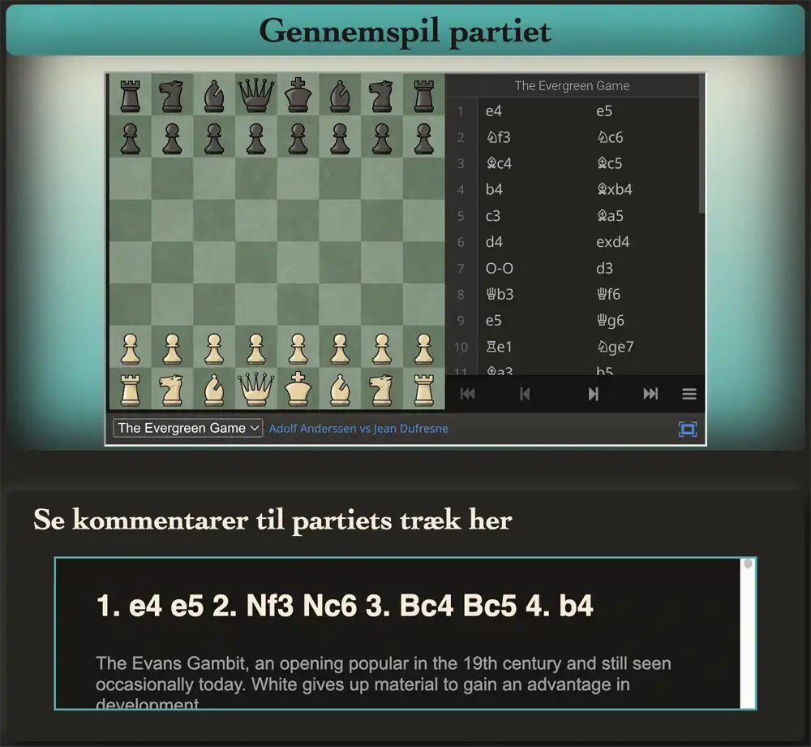
Typografi og tekstlayout
Jeg benytter mig overordnet af to fonte på sitet; en serif og en sans-serif. Overskrifter er sat med cambria/cochin/georgia etc, og findes i farverne “antiquewhite” og “lightseagreen”. Brødtekst er skrevet i grå helvetica. Jeg har ikke meget tekst på mit site, og det, der er, har jeg forsøgt at gøre spiseligt ved hjælp af korte sætningslængder og opdeling af teksten. I kommentarboksene til partierne er der ganske meget tekst. For at kunne se det omtalte parti OG kommentarerne til trækkene på samme tid, valgte jeg at placere kommentarerne i en scrollboks.
Billeder
Jeg har 3 typer billeder på sitet. 1. Portrætter af de omtalte spillere, 2. præsentationsbilleder samt signaturer fra spillerne. Der er ikke foretaget selvstændig farvejustering af disse billeder men jeg har de fleste steder forsøgt at få de interaktive skakpartier til at matche farverne på præsentationsbilledet.
Video
Storyboard
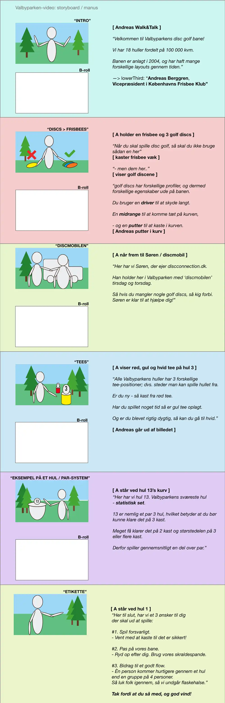
Refleksion
Embeddingen af skakpartierne gjorde det simpelt at style parametrene i html, så hver underside / parti fik en unik kombination af brikker og bræt. Det er centralt for mit design at det tilgås i afdæmpet belysning da de neomorfiske kontraster er små, og fordi der er tale om et ganske mørkt design. Dette bygger på en antagelse om at den interesserede bruger vil fordybe sig i indholdet. Jeg arbejdede dog også på at lave en (nice to have) day/night-toggler, som jeg måtte droppe pga. mangel på tid (og evner). Det kan desuden nævnes at emnesitet er informationstungt, og at der ikke er mange muligheder for at interagere med det. Det ligger med andre ord op til konsumption.
 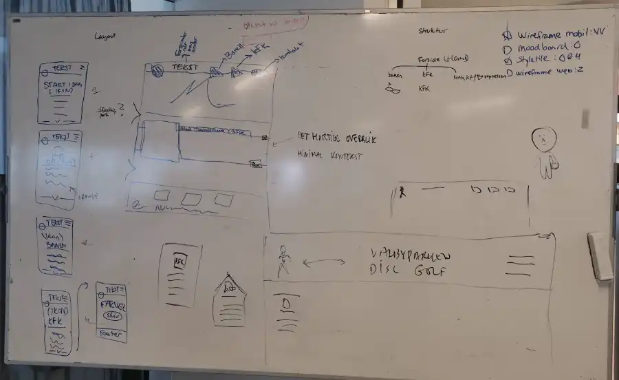
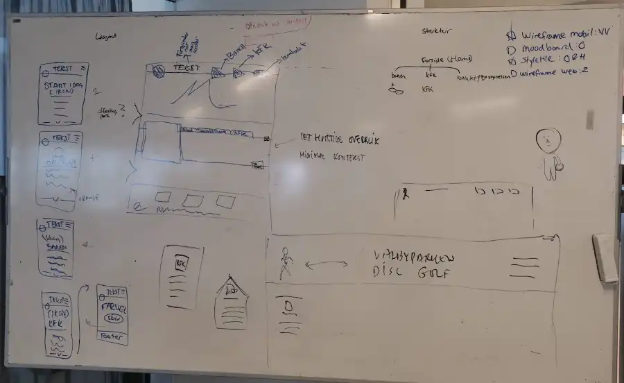